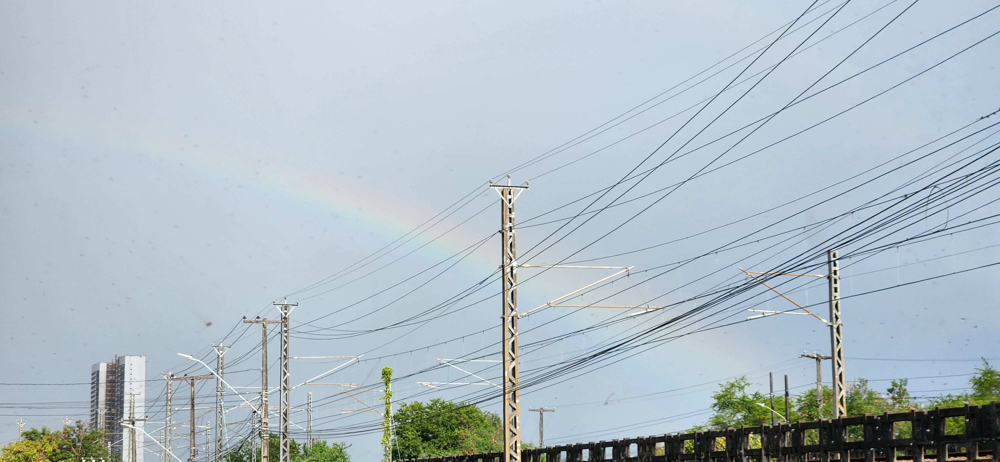
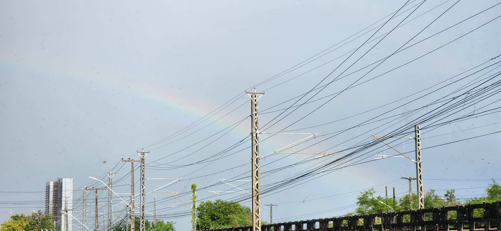

Olá, meu nome é Lucas
(Coloque o mouse sobre o Botão "Menu" no canto esquerdo superior para mais informações.)
Projeto de Introdução a Computação
UFPE
(Coloque o mouse sobre o Botão "Menu" no canto esquerdo superior para mais informações.)
Projeto de Introdução a Computação
UFPE
"Nascido na cidade de São Paulo - SP e atualmente morando em Recife - PE, sou um estudante de Ciência da Computação do Centro de Informatica da Universidade Federal de Pernambuco"

 


(Volte e coloque o mouse sobre o Botão "Menu" no canto esquerdo superior para mais informações.)